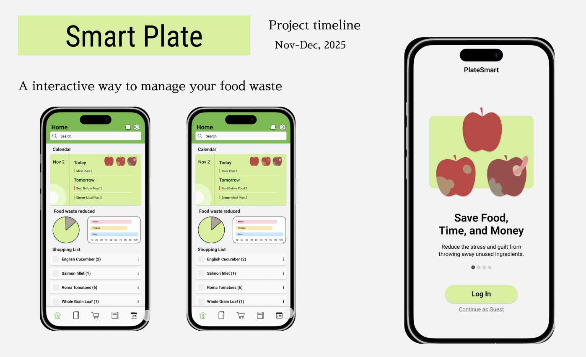
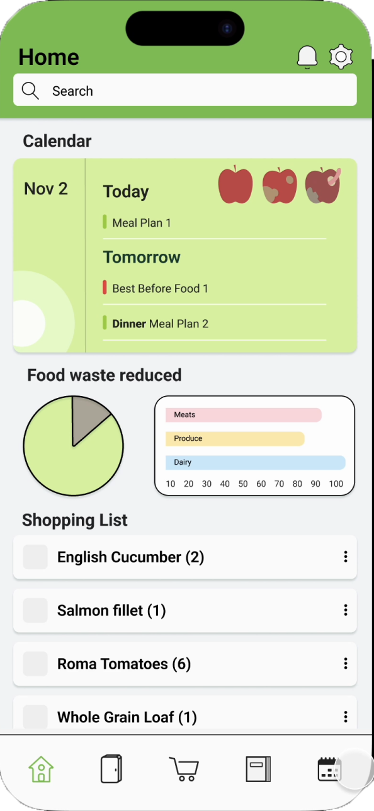
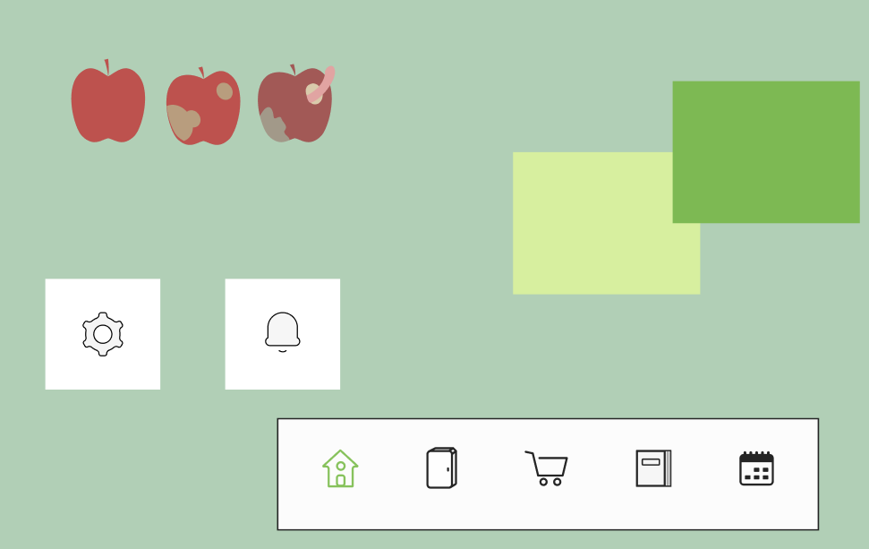
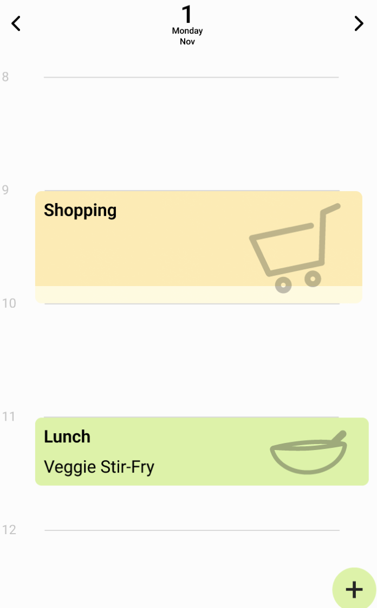
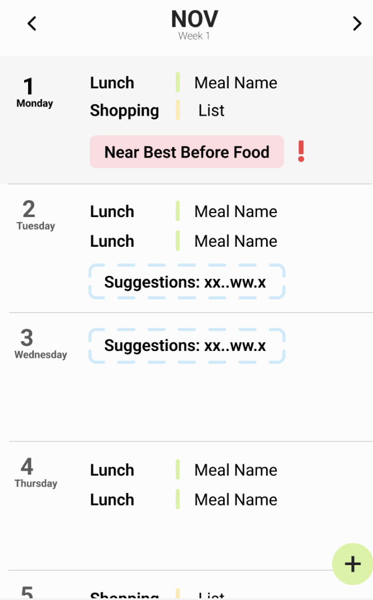

Project Task
Create a mobile app design that focuses on a domain/problem and the app provides a way to lessen the overarching problem people experience.
We focused on the domain of food waste, incorporating many features to overcome to mental toll of food waste. Including a inventory, so you can track and manage what you currently have, a shopping list that gives you notifications if it seems like you might purchase to much, a recipe book where you can import your recipes and find ways to use leftovers or what recipe would be best suited with what the user has in their pantry. Lastly we included a in app calendar where you can view your upcoming meal plans, best before dates and more. Most features have understandable interactions like adding to your shopping list with the add button, or checking your notifications with the notification icon. Overall our apps main intention is to lessen the guilt attached to food waste and the mental load of planning meals and keeping track of your pantry.
Pro tip: Find more ready-to-use components in components.html to build faster.


Functions
Navigation and planning around the home screen.
We wanted our home screen to be easy to access through to other features, styled like widgets that you can click into. Having your current calendar be showcased so you can see what’s coming up right when you open the app, I really pushed forward the idea of having the colours and icons feel fun and childlike but sophisticated. So it wouldn't feel like using our app was a task but a nice environment. I think all together everything meshes well and is pleasing to go through and navigate to what you want.

